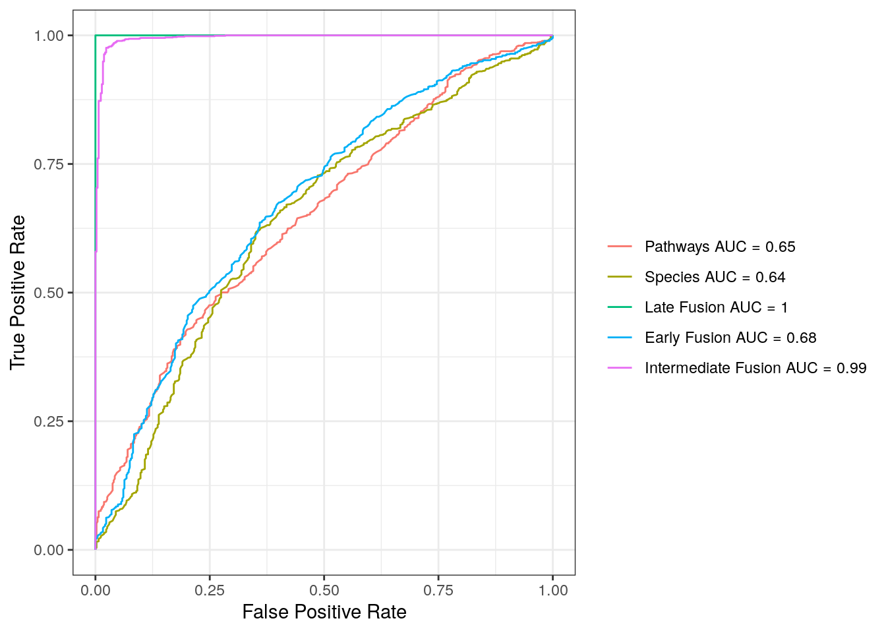

15 Multi-omics Integration
15.1 Multi-omics Integration
In multiview data analysis, there are two main types of approaches: early fusion and late fusion. combines all datasets into a single representation, which then serves as input for a supervised learning model. In contrast, builds individual models for each data view and combines their predictions using a second-level model as the final predictor. However, these traditional paradigms treat the data views in isolation and do not allow for interactions or dependencies between them. A more advanced method, called cooperative learning (DY 2022), which is also known as , combines the best of both worlds by encouraging predictions from different data views to align through an agreement parameter (\(\rho\)).
15.2 Multi-omics Prediction and Classification of Binary IBD Disease Status
In this chapter, we showcase examples of various integration paradigms (early, late, and intermediate fusion) using the R packages multiview [(DY 2022)] and SuperLearner (Laan MJ 2007). We make use of the publicly available source code from the multi-omics integrated framework (IntegratedLearner) proposed by H (2023).
15.3 Input data
We use the publicly available Inflammatory Bowel Diseases (IBD) data from the curatedMetagenomicData package (J 2019), where we aim to predict IBD disease status based on both taxonomic (species abundances) and functional (pathway abundances) profiles.
##################
# Load iHMP data #
##################
library(curatedMetagenomicData)
library(dplyr)
library(tidyverse)
se_relative <- sampleMetadata |>
filter(study_name == "HMP_2019_ibdmdb") |>
returnSamples("relative_abundance", rownames = "short")
se_pathway <- sampleMetadata |>
filter(study_name == "HMP_2019_ibdmdb") |>
returnSamples("pathway_abundance", rownames = "short")We will first prepare the input sample metadata and feature table for both relative abundance and pathway abundance data.
##########################
# Create sample metadata #
##########################
sample_metadata <- select(as.data.frame(colData(se_relative)), c("study_name", "disease", "subject_id"))
# Define response variable & sample id
sample_metadata$Y <- ifelse(sample_metadata$disease == "IBD", 1, 0)
sample_metadata <- sample_metadata %>% select(subject_id, Y) %>% rename(subjectID = subject_id)
###########################
# Create Species Features #
###########################
feature_species <- as.data.frame(assay(se_relative))
rownames(feature_species) <- sub('.*s__', '', rownames(feature_species))
###########################
# Create Pathway Features #
###########################
feature_pwys <- as.data.frame(assay(se_pathway))
feature_pwys <- rownames_to_column(feature_pwys, "ID")
feature_pwys <- feature_pwys %>%
filter(!grepl("\\|", ID)) %>%
filter(!ID %in% c('UNMAPPED', 'UNINTEGRATED')) %>%
column_to_rownames('ID') %>%
as.data.frame()
################################
# Combine Species and Pathways #
################################
feature_table <- bind_rows(feature_species, feature_pwys)
########################################################
# Check row names of feature_table and sample_metadata #
########################################################
all(colnames(feature_table) == rownames(sample_metadata))
## [1] TRUEWe will then create a metadata table for the features. This table captures high-level information related to the features (e.g., which layer they belong to).
######################################
# Create metadata table for features #
######################################
rowID <- rep(c('Species', 'Pathways'), c(nrow(feature_species), nrow(feature_pwys)))
feature_metadata <- cbind.data.frame(featureID = rownames(feature_table), featureType = rowID)
rownames(feature_metadata) <- feature_metadata$featureID
################
# Sanity check #
################
all(rownames(feature_table) == rownames(feature_metadata)) # TRUE
## [1] TRUE
all(colnames(feature_table) == rownames(sample_metadata)) # TRUE
## [1] TRUEFurther data pre-processing is necessary to handle near-zero-variance features in this dataset. Ultimately, 483 features are retained, consisting of 360 pathways and 123 species. A combination of variance and prevalence filtering is applied to the feature table, while related metadata is cleaned to ensure the retention of matching samples.
#################
# feature_table #
#################
library(caret)
feature_table_t <- as.data.frame(t(feature_table))
abd_threshold = 0
prev_threshold = 0.1
nzv <- nearZeroVar(feature_table_t)
features_var_filtered <- feature_table_t[, -nzv]
features_var_filtered <- as.data.frame(features_var_filtered)
features_filtered <- features_var_filtered[, colSums(features_var_filtered > abd_threshold) > nrow(features_var_filtered) * prev_threshold]
feature_table <- as.data.frame(t(features_filtered))
####################
# feature_metadata #
####################
feature_metadata <- feature_metadata[rownames(feature_table), ]
table(feature_metadata$featureType)
##
## Pathways Species
## 358 124
######################
# Sanity check again #
######################
all(rownames(feature_table) == rownames(feature_metadata)) # TRUE
## [1] TRUE
all(colnames(feature_table) == rownames(sample_metadata)) # TRUE
## [1] TRUEFollowing the preprocessing, we conduct additional input data preparation, which includes configuring parameters for sample splitting and 5-fold cross-validation. It’s important to note that this dataset contains repeated measures (i.e., multiple samples per subject). To address this, we will conduct 5-fold cross-validation at the subject level. The source code is derived from the IntegratedLearner R package (H 2023).
library(caret)
# Set parameters and extract subject IDs for sample splitting
seed <- 1
set.seed(seed)
subjectID <- unique(sample_metadata$subjectID)
##################################
# Trigger 5-fold CV (Outer Loop) #
##################################
subjectCvFoldsIN <- createFolds(1:length(subjectID), k = 5, returnTrain=TRUE)
#########################################
# Curate subject-level samples per fold #
#########################################
obsIndexIn <- vector("list", 5)
for(k in 1:length(obsIndexIn)){
x <- which(!sample_metadata$subjectID %in% subjectID[subjectCvFoldsIN[[k]]])
obsIndexIn[[k]] <- x
}
names(obsIndexIn) <- sapply(1:5, function(x) paste(c("fold", x), collapse = ''))
###############################
# Set up data for SL training #
###############################
cvControl = list(V = 5, shuffle = FALSE, validRows = obsIndexIn)
#################################################
# Stacked generalization input data preparation #
#################################################
feature_metadata$featureType <- as.factor(feature_metadata$featureType)
name_layers <- with(droplevels(feature_metadata), list(levels = levels(featureType)), nlevels = nlevels(featureType))$levels
SL_fit_predictions <- vector("list", length(name_layers))
SL_fit_layers <- vector("list", length(name_layers))
names(SL_fit_layers) <- name_layers
names(SL_fit_predictions) <- name_layers
X_train_layers <- vector("list", length(name_layers))
names(X_train_layers) <- name_layers
layer_wise_predictions_train <- vector("list", length(name_layers))
names(layer_wise_predictions_train) <- name_layersNext, we run the late fusion algorithm described in H (2023). To this end, we subset the data for each feature type and conduct the analysis on each layer for the first-stage learning to predict the outcome. In other words, we fit a machine learning algorithm per layer (called a ‘base learner’), utilizing the SuperLearner R package.
########################################################
# Subset data per omics and run each individual layers #
########################################################
for (i in seq_along(name_layers)){
# Prepare single-omic input data
include_list <- feature_metadata %>% filter(featureType == name_layers[i])
t_dat_slice <- feature_table[rownames(feature_table) %in% include_list$featureID, ]
dat_slice <- as.data.frame(t(t_dat_slice))
Y = sample_metadata$Y
X = dat_slice
X_train_layers[[i]] <- X
# Run user-specified base learner
library(SuperLearner)
SL_fit_layers[[i]] <- SuperLearner(Y = Y,
X = X,
cvControl = cvControl,
SL.library = c('SL.randomForest'),
family = binomial())
# Append the corresponding y and X to the results
SL_fit_layers[[i]]$Y <- sample_metadata['Y']
SL_fit_layers[[i]]$X <- X
# Remove redundant data frames and collect pre-stack predictions
rm(t_dat_slice)
rm(dat_slice)
rm(X)
SL_fit_predictions[[i]] <- SL_fit_layers[[i]]$Z
# Re-fit to entire dataset for final predictions
layer_wise_predictions_train[[i]] <- SL_fit_layers[[i]]$SL.predict
}The next step of the analysis is to combine the layer-wise cross-validated predictions with a meta-model (meta_learner) to generate final predictions based on all available data points for the stacked model. Here, we will use glmnet as the meta-learner. However, other choices are also possible.
##############################
# Prepare stacked input data #
##############################
combo <- as.data.frame(do.call(cbind, SL_fit_predictions))
names(combo) <- name_layers
###############################
# Set aside final predictions #
###############################
combo_final <- as.data.frame(do.call(cbind, layer_wise_predictions_train))
names(combo_final) <- name_layers
####################
# Stack all models #
####################
# Run user-specified meta learner
SL_fit_stacked <- SuperLearner(Y = Y,
X = combo,
cvControl = cvControl,
verbose = TRUE,
SL.library = 'SL.glmnet',
family = binomial())
# Extract the fit object from superlearner
model_stacked <- SL_fit_stacked$fitLibrary[[1]]$object
stacked_prediction_train <- predict.SuperLearner(SL_fit_stacked, newdata = combo_final)$pred
# Append the corresponding y and X to the results
SL_fit_stacked$Y <- sample_metadata['Y']
SL_fit_stacked$X <- comboIn contrast to late fusion, in early fusion, we will simply supply a combined representation of the data and we will use the random forest method for building an integrated prediction model.
#####################################
# EARLY FUSION (CONCATENATED MODEL) #
#####################################
fulldat<-as.data.frame(t(feature_table))
# Early Fusion using Random Forest
SL_fit_concat <- SuperLearner(Y = Y,
X = fulldat,
cvControl = cvControl,
SL.library = 'SL.randomForest',
family = binomial())
# Extract the fit object from SuperLearner
model_concat <- SL_fit_concat$fitLibrary[[1]]$object
# Append the corresponding y and X to the results
SL_fit_concat$Y <- sample_metadata['Y']
SL_fit_concat$X <- fulldatFinally, we consider the intermediate fusion approach, which combines ideas from both late fusion and early fusion by integrating the usual squared-error loss of predictions with an “agreement” (fusion) penalty (\(\rho\)) so that the predictions from different data views agree.
The intermediate fusion adjusts the degree of fusion in an adaptive manner, where the test set prediction error is estimated with a cross-validation method. By varying the weight of the fusion penalty - hyperparameter \(\rho\), we obtain the early and late fusion approaches as special cases. If \(\rho = 0\), we have a simple form of early fusion; if \(\rho = 1\), we obtain a simple form of late fusion. For \(0 < \rho < 1\), we obtain the intermediate fusion.
Here, as examples, we will prepare the input data, fit the multiview model, and run the cross-validation in this section.
##############################
# Prepare data for multiview #
##############################
# Separate omics layers
feature_metadata$featureType <- as.factor(feature_metadata$featureType)
name_layers <- with(droplevels(feature_metadata), list(levels = levels(featureType)), nlevels = nlevels(featureType))$levels
# Define a list
dataList <- vector("list", length = length(name_layers))
names(dataList) <- name_layers
table(feature_metadata$featureType)
##
## Pathways Species
## 358 124
dataList[[1]] <- t(feature_table[124:nrow(feature_table), ])
dataList[[2]] <- t(feature_table[1:123, ])
# Extract y and X's
dataList <- lapply(dataList, as.matrix)
dataList <- lapply(dataList, scale)
########################
# Run cross-validation #
########################
set.seed(1234)
library(multiview)
library(glmnet)
cvfit <- cv.multiview(dataList, Y, family = binomial(), alpha = 0.5)
DD <- as.data.frame(as.matrix(coef_ordered(cvfit, s="lambda.min", alpha = 0.5)))
DD$standardized_coef <- as.numeric(DD$standardized_coef)
DD$coef <- as.numeric(DD$coef)In this section, we visualize the prediction performance by gathering all predictions and extracting the data necessary for ROC plotting, corresponding to each integration paradigm.
#########################################################
# Gather all predictions and ROC curve data preparation #
#########################################################
coop_pred <- predict(cvfit, newx = dataList, s = "lambda.min", alpha = 0.5, type = "response")
yhat.train <- cbind(combo, stacked_prediction_train, SL_fit_concat$Z, coop_pred)
colnames(yhat.train) <- c(colnames(combo), "Late Fusion", "Early Fusion", "Intermediate Fusion")
# Extract ROC plot data
list.ROC <- vector("list", length = ncol(yhat.train))
names(list.ROC) <- colnames(yhat.train)
# Loop over layers
library(ROCR)
for(k in 1:length(list.ROC)){
preds <- yhat.train[ ,k]
pred <- prediction(preds, Y)
AUC <- round(performance(pred, "auc")@y.values[[1]], 2)
perf <- performance(pred, "sens", "spec")
list.ROC[[k]] <- data.frame(sensitivity = slot(perf, "y.values")[[1]],
specificity = 1 - slot(perf, "x.values")[[1]],
AUC = AUC,
layer = names(list.ROC)[k])
}
# Combine
ROC_table <- do.call('rbind', list.ROC)Based on the ROC plot described below, we observe that the AUC is 0.65 when considering only the pathway abundance data in the model, and 0.64 for the model including only the species abundance data. The AUC increases to 0.68 when using the early fusion model and reaches 1 with the late fusion model. In contrast, the intermediate fusion model achieves an AUC of 0.99. Overall, most integrated classifiers outperform individual layers in distinguishing between IBD and non-IBD controls.
# Prepare data for plotting
plot_data <- ROC_table
plot_data$displayItem <- paste(plot_data$layer, " AUC = ", plot_data$AUC, sep="")
plot_data$displayItem <- factor(plot_data$displayItem,
levels = unique(plot_data$displayItem))
# ROC curves
p <- ggplot(plot_data,
aes(x = specificity,
y = sensitivity,
group = displayItem)) +
geom_line(aes(x = specificity,y = sensitivity,color = displayItem)) +
theme(legend.position = "bottom",
legend.background=element_blank(),
legend.box.background=element_rect(colour = "black")) +
theme_bw() +
xlab("False Positive Rate") +
ylab("True Positive Rate") +
theme(legend.position = "right", legend.direction = "vertical") +
labs(color = '')
# Print
print(p)
Finally, we visualize the results for the top 20 features for each layer based on the intermediate fusion.
#### Change the pathway
# Only plot tp to 20 per layer
DD <- DD %>%
group_by(view) %>%
top_n(n = 20, wt = abs(standardized_coef))
DD$view_col <- gsub(":.*", "", DD$view_col)
# Visualization
library(forcats)
p <- DD %>%
mutate(view_col = fct_reorder(view_col, standardized_coef)) %>%
ggplot(aes(x = view_col, y = standardized_coef, fill = view, width = 0.75)) +
geom_bar(stat = "identity", show.legend = FALSE, width = 1) +
coord_flip() +
facet_wrap(~ view, scales = 'free_y', nrow = 2) +
ylab('Standardized LFC') +
xlab('') +
ggtitle('IBD-associated multi-omics features') +
theme_bw() + theme(strip.background = element_blank(),
panel.grid.major = element_line(colour = "grey80"),
panel.border = element_blank(),
axis.ticks = element_line(size = 0),
panel.grid.minor.y = element_blank(),
panel.grid.major.y = element_blank())
pBased on the bar plot, we observe that is the species most positively associated, while is the most negatively associated species. Additionally, L-lysine biosynthesis VI is the pathway most positively associated, and PYRIDNUSCYN-PWY: NAD biosynthesis I (from aspartate) is the pathway most positively associated, respectively.